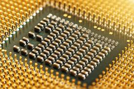
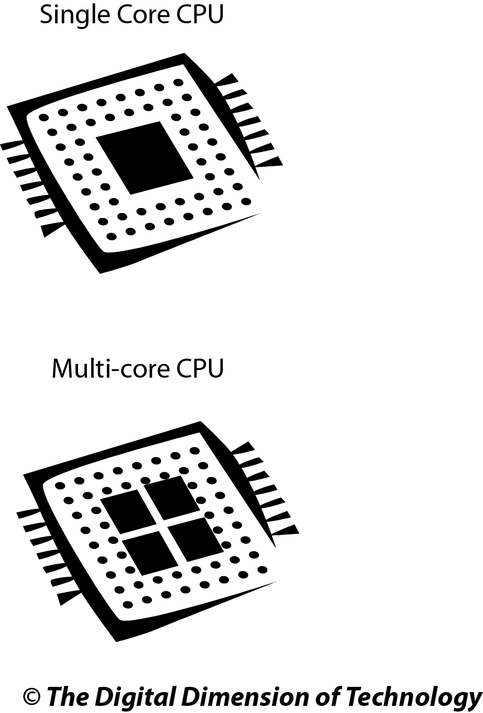
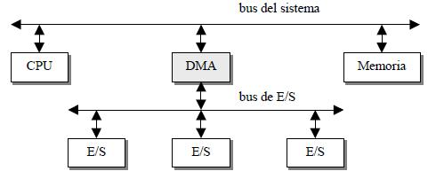
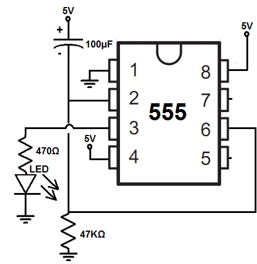
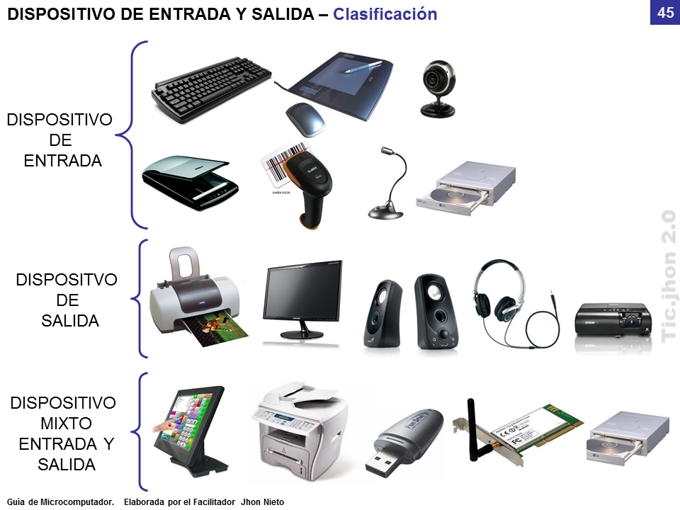
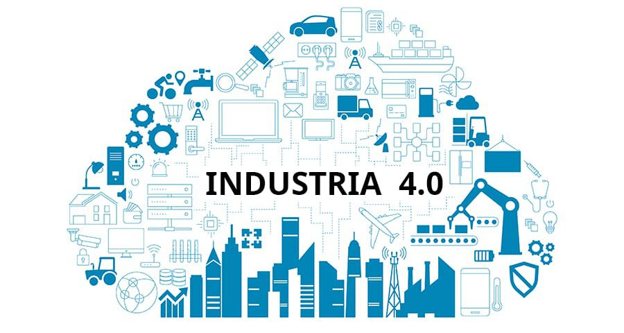

Es un componente de la placa madre. Se definen como un conjunto de chips que ayudan a la PC a la interconexión y el funcionamiento adecuado de los componentes en la motherboard, la gestión de memoria, administración de puertos E/S y la coordinación entre la CPU y otros componentes.

Es el componente del hardware central y la base fundamental de la computadora. Sin ella, un ordenador no puede funcionar en lo absoluto. Asimismo, es responsable de todos los cálculos necesarios para que el ordenador funcione. Actualmente, los dos fabricantes más conocidos son Intel y AMD.
• Un solo núcleo (Single core): Tienen un único núcleo en el procesador y pueden realizar una tarea a la vez.
• De varios núcleos (Multi core): Tienen varios núcleos (como dual o quad core). Pueden realizar múltiples tareas en paralelo, lo que mejora la eficiencia y velocidad.

Un controlador de bus enumera los elementos secundarios; durante la enumeración, identifica los dispositivos en su bus y crea objetos de dispositivo para ellos.
El bus de control es el que regula en qué dirección debe ir la información de escritura y lectura. Permite al CPU determinar su el sistema está enviando o recibiendo datos y cuándo.

Son conocidos también como puertos o interfaces y son aquellos puntos por los cuales se pueden conectar los periféricos o aparatos que sirvan para llevar a cabo una buena interacción humano-computadora.

Es un módulo que tiene por función gestionar las interrupciones de E/S para el CPU. Proporciona flexibilidad porque permite idealmente, gestionar un número ilimitado de señales de interrupción.
Este controlador recibe las señales de interrupción de los dispositivos y toma la decisión de cuál es más prioritaria, enviando una única señal al procesador. La respuesta del mismo, es transmitida al dispositivo y el propio controlador se encarga de depositar en el bus, el vector de la interrupción.

Es un dispositivo de hardware que permite que ciertos componentes de un sistema informático, transfieran datos directamente hacia y desde la memoria del sistema sin la intervención del CPU.
La función principal del controlador DMA, es mejorar el rendimiento del sistema al permitir que los dispositivos periféricos realicen transferencias de datos de manera independiente, liberando al CPU para realizar otras tareas mientras se lleva a cabo la transferencia de datos.

El circuito electrónico que más se utiliza tanto en la industria como en circuitería comercial, es el circuito temporizador o de retardo.
Un temporizador básicamente consiste en un elemento que se activa o desactiva después de un tiempo preestablecido. Se encuentra en la placa base de la PC y es capaz de mantener una cuenta de tiempo basada en el reloj de la computadora. Puede usarse para calcular el intervalo entre dos mediciones de tiempo o para generar pausas.

Es una red secuencial que acepta un código que define la operación que se va a ejecutar y luego prosigue a través de una secuencia de estados, generando una correspondiente secuencia de señales de control.
Estas señales de control incluyen el control de lectura-escritura y señales de dirección de memoria válida en el bus de control del sistema.
Es un componente electrónico requerido para generar una señal de video que se manda a una pantalla de video por medio de un cable. Normalmente se encuentra en la placa madre de la computadora o en una placa de expansión.
Se compone de un controlador de video, memoria de pantalla o RAM video y el generador de caracteres. Actualmente, también poseen un acelerador de gráficos.
• Adaptador de Pantalla Monocromo (MDA): Contaba con 4 KB de memoria de video RAM que permitía mostrar 25 líneas de 80 caracteres cada una con una resolución de 14 x 9 puntos por carácter.
• Hércules: En modo texto, soportaba una resolución de 80 x 25 puntos. Los gráficos, eran hechos con 720 x 350 puntos (gráficos de un solo color).
• Color Graphics Adapter (CGA): Utiliza el mismo chip que la Hércules, sin embargo, aporta resoluciones y colores diferentes. Los colores primarios se combinan digitalmente, formando ocho colores.
• Enchanted Graphics Adapter (EGA): En el modo texto ofrece una resolución de 14 x 18 puntos. En el modo gráfico ofrece resoluciones de 640 x 200 y 640 x 350 a 4 bits, teniendo como resultado una paleta de 16 colores, siempre y cuando la memoria de video RAM sea de 256 KB.
• Video Graphics Adapter (VGA): Ofrece una paleta de 256 colores. Al principio contaban con 256 KB de memoria y alcanzaban una resolución de 320 x 200 puntos.
• Acelerador Gráfico: Se encarga de realizar una serie de funciones relacionadas con la presentación de gráficos en la pantalla.
• Coprocesador Gráfico: Se especializan en la ejecución de una serie de instrucciones específicas de generación de gráficos.
• Aceleradores Gráficos 3D: Para manejar un gráfico tridimensional, éste se divide en una serie de puntos en forma de coordenadas, que se guardan en la memoria RAM.

Un periférico de E/S es el que se utiliza para ingresar (E) datos a la computadora y luego de ser procesados por el CPU, genera la salida (S) de información. Su función es leer o grabar, permanente o virtualmente, todo aquello que se haga con la computadora, para que pueda ser utilizado por los usuarios y otros sistemas.
• Periféricos de E/S: Interactúan con los elementos externos a un computador de forma bidireccional. Ingresan información y la emiten.
• Periféricos de entrada: Se utilizan para proporcionar datos y señales a la unidad de procesamiento, tales como el teclado, mouse, escáner.
• Periféricos de salida: Reproducen lo que ocurre en la computadora para el interés del usuario. Por ejemplo, el monitor, impresora, auriculares.

• Memoria externa: Son aquellos dispositivos de almacenamiento que no forman parte de la memoria interna de la PC. No son imprescindibles para el funcionamiento de la misma. Se encuentran incluidos disquetes, discos ópticos, discos duros.

• Memoria interna: Son fundamentales para el uso de la computadora y están colocadas en la motherboard. Son la RAM y ROM.

Es un dispositivo que se monta en el gabinete de la PC y transforma la corriente alterna en directa. Existen diferentes tipos de fuentes:
• Advanced Technology (AT): Hace referencia a un estándar de dispositivos introducidos al mercado a inicios de los años 80, reemplazando a la tecnología extendida.

• Advanced Technology Extended (ATX): Es la segunda generación de fuentes introducidas al mercado para computadoras con microprocesador Intel Pentium MMX. Deespués de ahí, se extendió su uso.

• Se utilizan tecnologías existentes pata reducir costes, recopilar datos y proporcionar una mejor experiencia al cliente.
• Adoptan el concepto de transformación digital y los cambios culturales que requiere. Implementar y gestionar servicios digitales, puede requerir una reestructuración organizacional y creación de nuevos roles.
• Los modelos empresariales que se alinean con un enfoque hacia la satisfacción del cliente se centrarán en los servicios digitales, ya que esto es lo preferido por los usuarios.
La industrialización de los servicios de tecnología de información va a redefinir el mercado en términos de cómo las organizaciones evalúan, compran y seleccionan los servicios y cómo los vendedores desarrollan y establecen precios de los servicios.
Es la realización de la transformación digital del campo, que brinda una toma de decisiones en tiempo real, productividad mejorada, flexibilidad y agilidad. Los fabricantes están integrando nuevas tecnologías, que incluyen IoT, computación, análisis en la nube, IA y Machine Learning.

Es el conjunto de las transacciones comerciales y financieras realizadas a través del procesamiento y la transmisión de información, incluyendo texto, sonido e imagen. Funciona de la siguiente manera:
1. Conecta compradores y vendedores por canales electrónicos.
2. Se encuentran los productos o servicios a comprar y el procesador de pago permite el intercambio de productos o servicios. Al hacerse la transacción correctamente, se envía una confirmación y un recibo a imprimir.
3. El vendedor envía los productos y proporciona al comprador una guía de seguimiento. En caso de ser un servicio, el proveedor se pone en contacto para programar y completar el servicio.